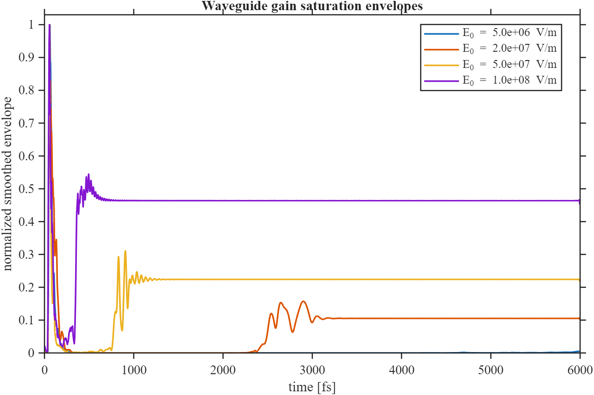
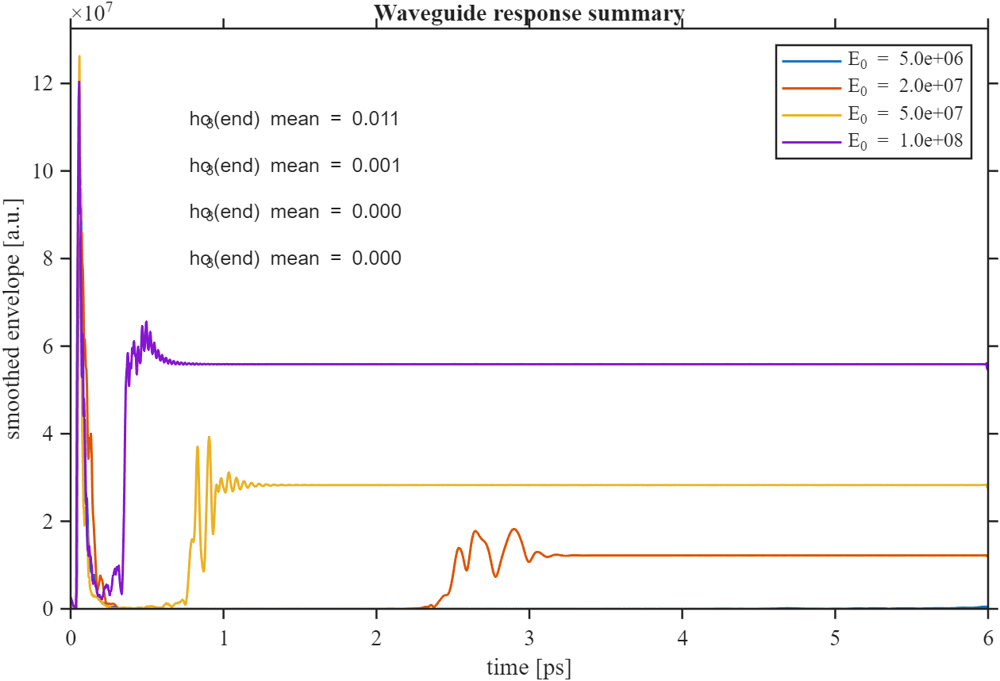

Open source · MATLAB
github.com/muhammadzareii/slavcheva_faithful_repoOverview
This repository is a careful, auditable implementation of the semiclassical FDTD framework described in Slavcheva et al. (G. Slavcheva, J. M. Arnold, I. Wallace, R. W. Ziolkowski, "FDTD simulation of the nonlinear gain dynamics in active optical waveguides and semiconductor microcavity lasers"). The paper presents a complete semiclassical model — Maxwell's equations coupled to optical Bloch equations — for studying gain saturation, pulse propagation, and lasing threshold in one-dimensional semiconductor structures.
The purpose of the repository is not a pedagogical exercise. It is a piece of research software: readable, auditable, easy to extend, and designed to be placed on GitHub without embarrassment. Every configurable parameter (predictor-corrector iterations, source placement, boundary type, FFT windowing, output decimation) is exposed explicitly rather than hard-coded — because a rigid implementation can appear paper-faithful on the surface while being impossible to validate.
The primary test cases are: slab gain validation (verifying population inversion against analytic formulas), waveguide saturation dynamics (pulse compression and gain depletion), and VCSEL cavity lasing at 850 nm and 1.29 μm.
Physical Formulation
Maxwell's Equations (1D TE Mode)
In 1D the relevant field components are E_y and H_z. The update equations on a Yee grid:
D_y^(n+1)[i] = D_y^n[i] − (Δt/Δx)·(H_z^(n+½)[i+½] − H_z^(n+½)[i−½])
E_y^(n+1)[i] = (D_y^(n+1)[i] − P_y^(n+1)[i]) / ε₀ε_r
The electric displacement D is separated from the polarisation P of the gain medium. P is evolved by the Bloch equations.
Optical Bloch Equations
For a two-level system with transition frequency ω₀, dipole moment μ, population relaxation time T₁, and dephasing time T₂:
dN/dt = −(N − N_pump)/T₁ + (1/ℏω₀)·E·dP/dt
N is the population inversion (N > 0: gain). N_pump represents the externally maintained carrier density from electrical pumping. The coupling between Maxwell and Bloch is tight: E drives P through the first equation; P modifies D which enters E through the constitutive relation; and E·dP/dt is the stimulated emission / absorption power depositing energy into or extracting it from the field.
Numerical Decisions
| Design Choice | Implementation | Rationale |
|---|---|---|
| Boundary condition | Mur first-order ABC | Transparent, stable, easy to audit vs. PML |
| Bloch integration | Predictor-corrector (2 iterations) | Second-order accuracy, stable for stiff gain equations |
| Source injection | Soft source at configurable position | Separates incident and reflected fields cleanly |
| Spectral extraction | On-the-fly DFT with Hann window | Spectral leakage suppression in cavity resonance analysis |
| Noise seeding | Gaussian noise with stored RNG seed | Fully reproducible cavity start-up |
Results



Repository Structure
slavcheva_faithful_repo/ ├── core/ │ ├── fdtd_1d.m # Main FDTD loop (Maxwell + Mur ABC) │ ├── bloch.m # Predictor-corrector Bloch integrator │ ├── drude_aux.m # ADE for dispersive media (if used) │ └── source.m # Soft-source injection ├── configs/ │ ├── vcsel_850nm.m # VCSEL case: 850 nm │ └── vcsel_1290nm.m # VCSEL case: 1.29 μm ├── docs/ │ ├── equations_and_numerics.md # Full derivation of update equations │ ├── figure_map.md # Which figure corresponds to which run │ └── reproduction_protocol.md # Step-by-step guide to reproduce paper figures ├── notes/ │ ├── internal_extended_notes.md # Design rationale and conservative choices │ └── known_gaps_and_validation_plan.md └── STATUS.md # Current reproduction status per figure